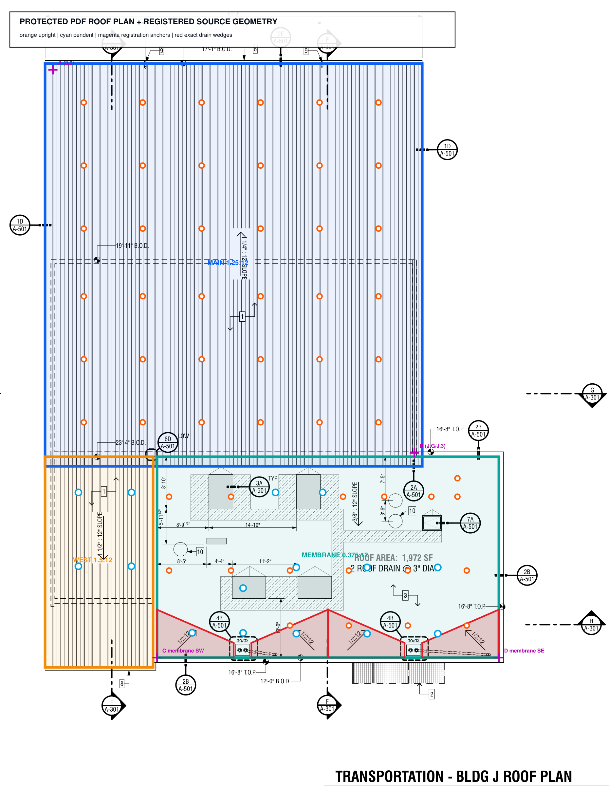
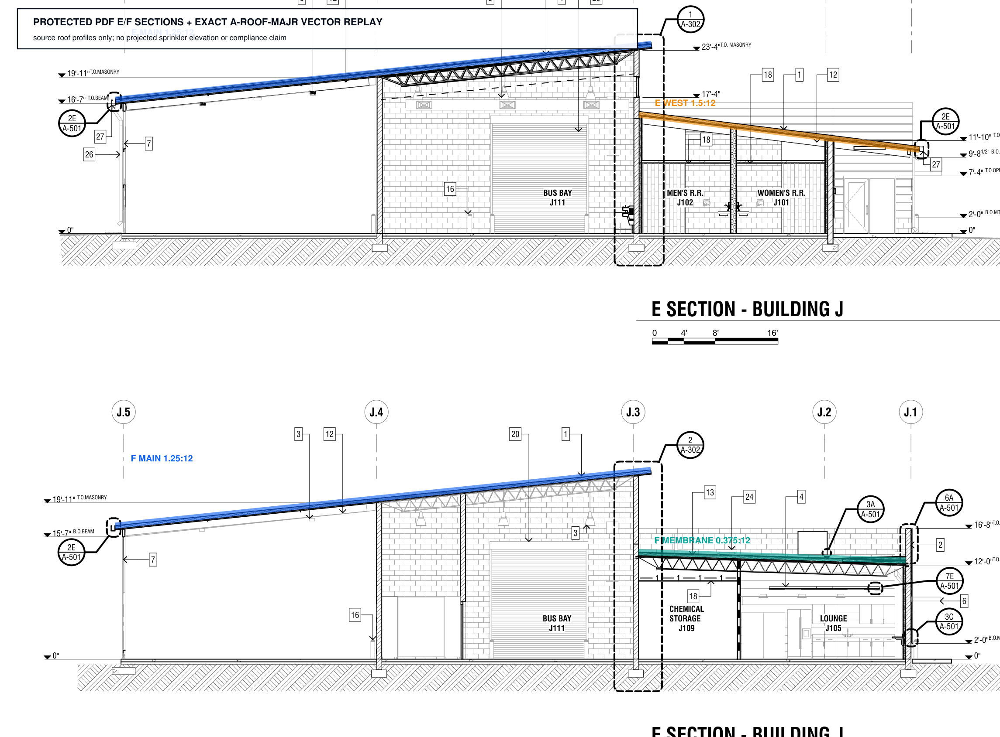
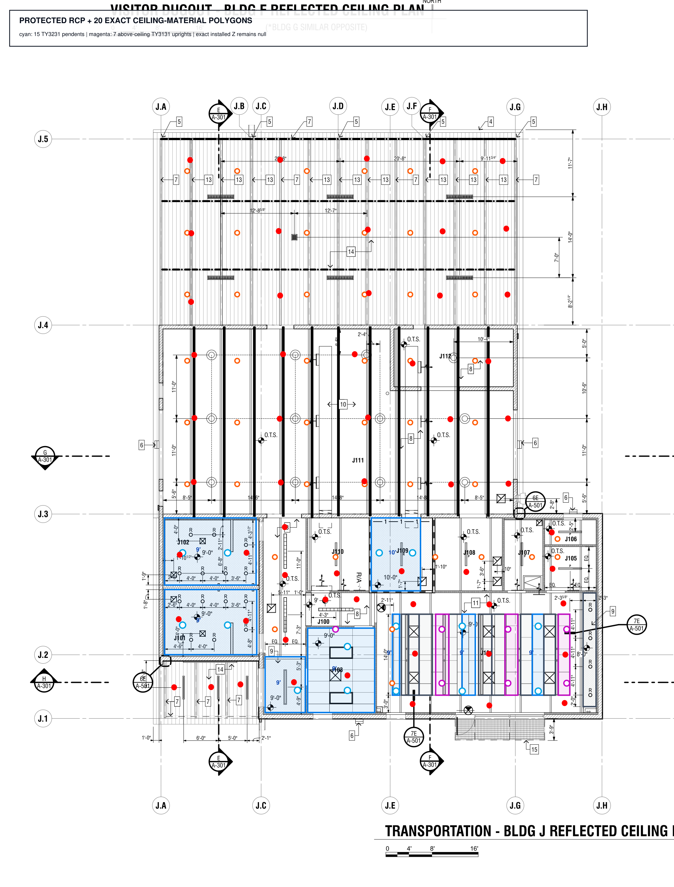
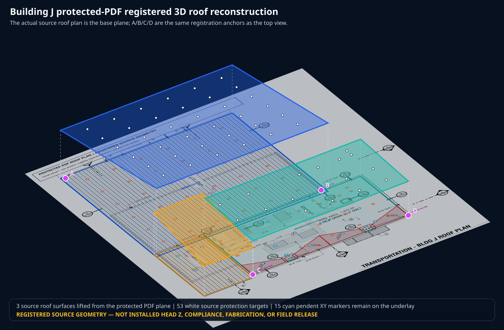

Roof plan — all 68 source heads on the PDF underlay

Elevation — exact source roof vectors on PDF sections E and F

RCP — exact ceiling zones and approved sprinkler regimes

The RCP proves 15 pendent ceiling planes and seven upright heads above finished-ceiling zones. TY3231/TY3131 product bindings are approved-source facts; exact installed head Z remains null.
3D — protected PDF projected into the registered coordinate frame

The former blank-background diagram is retired. This view keeps the actual PDF plan, the A/B/C/D anchors, the three roof surfaces, and the source protection targets in one inspectable frame.